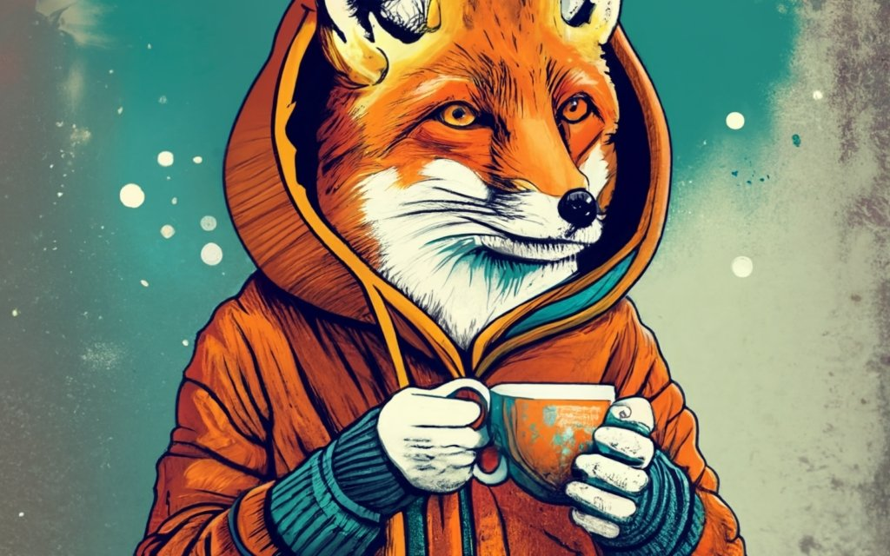

Sophie Bennet
Product designer who focused on simplicity & usability.
Información estadística
En el CSS hay un conjunto de variables CSS establecidas que ayudan a establecer el tema de la web. Puedes acceder a las developer tools (F12) y cambiar estas dos variables.
--shadow-color: pink; --bg-color: moccasin;
En el primer <article>, se establece el valor de una variable CSS mediante el atributo style, de manera que sólo se usa allí.
--card-header-border: 2px solid var(--card-header-color);

Product designer who focused on simplicity & usability.
Product designer who focused on simplicity & usability.
Product designer who focused on simplicity & usability.
Product designer who focused on simplicity & usability.